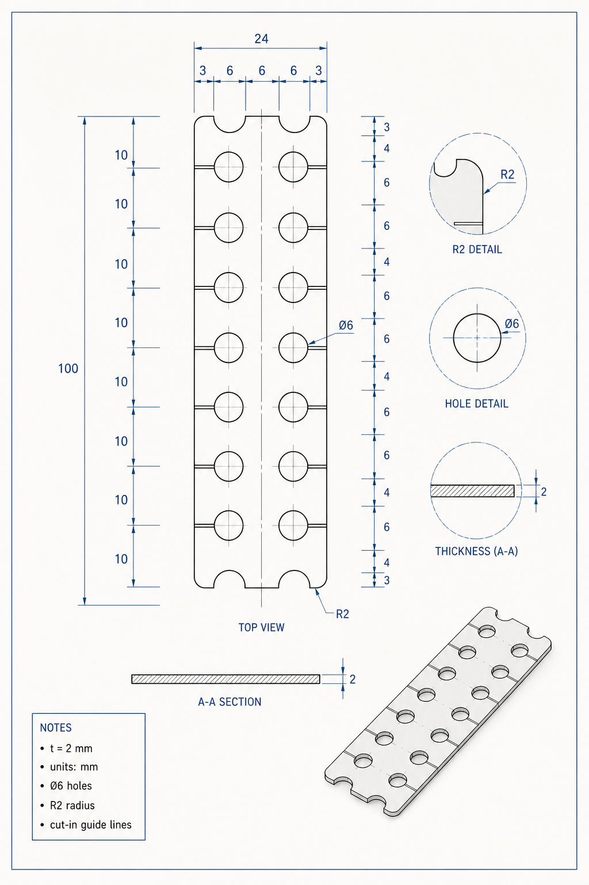

設計標本帳
使い方をページごとに説明するだけでなく、Millrect で作れるものを 作例として並べます。各作例は画像、できること、UI 手順、AI/MCP、 DSL の入口をひとつにまとめ、画像の追加や差し替えをシナリオ単位で管理します。
標本帳の考え方
スクリーンショットを大量に貼る代わりに、少数の作例を深く見せます。 図面・3D・AI への頼み方・DSL を同じ作例に紐づけることで、 画像の枚数を抑えながら「何ができるのか」を強く伝えます。
生成AIの設計図表現
複雑な作例は、アプリ画面のスクリーンショットだけで見せるのではなく、 生成AIで作る設計図ビジュアルを主役にします。UI 画像は操作の証拠に絞り、 まず「何が作れるのか」が伝わる完成図を置きます。

Blueprint Sheet
寸法線、穴、長穴、断面、注記を一枚で見せるドキュメントの主役画像。
Machined Part Hero
トップや標本帳で「作れるもの」を直感的に伝える完成品ビジュアル。
Technical Spread
図面、仕様、素材、DSL をまとめて見せる、AI/MCP 説明向けの表現。
実プロダクト例: Module Joint 1
実際のプロダクト図面も、この表現に変換して掲載できます。下の例は 厚さ 2mm、全寸法 mm、24×100mm のジョイントプレートを題材にした 掲載用の設計図ビジュアルです。製造寸法の正は元図・DSL に置き、 生成画像は「何を作るのか」を伝えるショーケースとして使います。


作例カード
作例カードは、スクリーンショットの置き場ではなく「教材データの目次」です。 ここから機能ページへ入ると、ユーザーは目的の成果物から逆算して学べます。
Live Specimen
静的画像だけで説明しにくいパラメトリックな感覚は、この場で動かして見せます。 ここでは図面上のハンドルをドラッグすると、2D 図面、寸法アイソメ図、Part DSL が同時に更新されます。 穴配置は 2×2 のまま固定し、寸法だけを触れる教材として扱います。
画像運用
| 画像の種類 | 役割 | 更新タイミング |
|---|---|---|
| Showcase | トップや標本帳で成果物を見せる完成画像 | 作例の見栄えを変えたときだけ |
| Scenario capture | 同じ作例 ID から再生成できる図面・3D | 対象シナリオだけ再キャプチャ |
| UI proof | ボタンやパネルの場所を示す補助画像 | UI の位置や名称が変わったときだけ |
新しい画像を増やす前に、既存の作例カードへ追加できないかを確認します。 作例が増える場合は、画像ファイル名より先に scenario ID を決めます。 詳細は Documentation System と Blueprint Specimens に残しています。